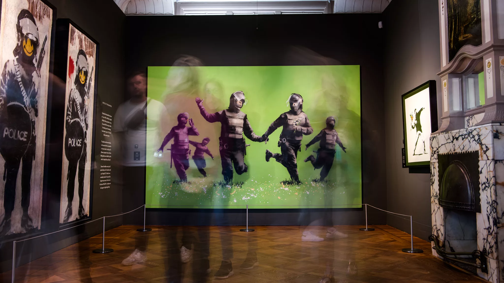
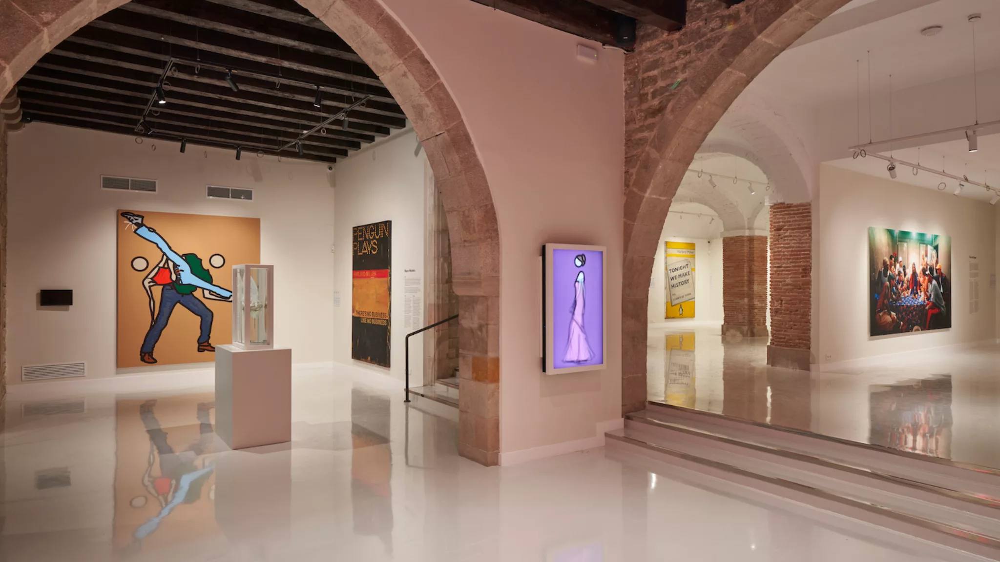

dit verbergen
About Moco
We are Moco
In art we trust
Amsterdam & Barcelona
The Moco Museum focuses on proven artists with a unique vision
The Moco Museum is an independent museum with a wide range of inspiring modern, contemporary, and street art – located in Amsterdam, the Netherlands and Barcelona, Spain. In our collection, Moco exhibits Jean-Michel Basquiat, Banksy, JR, KAWS, Keith Haring, Jeff Koons, Damien Hirst, Tracey Emin, Yayoi Kusama, Andy Warhol, Studio Irma, and so many more! We offer visitors an unparalleled collection of art for an unforgettable experience.
The Modern Contemporary (Moco) Museum has made its home in the historic Villa Alsberg on Museumplein (Honthorststraat 20, 1071 DE Amsterdam, NL) and the former Palacio Cervelló (c / Montcada 25, 08003 Barcelona, SP).
Moco Amsterdam
Moco Amsterdam is housed in Villa Alsberg, a townhouse overlooking Museumplein in the heart of Amsterdam. The building was designed in 1904 by Eduard Cuypers, nephew of the renowned Pierre Cuypers, designer of Amsterdam Central Station and the Rijksmuseum. This privately-owned residence was one of the first family homes built along Museumplein and retained this function until 1939. Subsequently, the house was let to priests who taught at the Saint Nicolas School in Amsterdam, and later it was converted into an office for a law firm.
Moco Barcelona
Moco Barcelona is located in a 16th Century palace on Montcada Street in the heart of Barcelona. Palacio Cervelló is formerly the private residence of the noble Cervelló family until the 18th Century. The building embraces a mix of styles that shows a colorful, grand history over centuries. Incorporating parts of a previous construction from the 15th Century – interior courtyard, arched staircase with columns, capitals, and Renaissance-type moldings – Palacio Cervelló welcomes visitors with an impressive Gothic facade. From the Middle Ages to the 20th Century, aristocrats, merchants, and royals have held onto this historical site.
Moco Museum (Amsterdam/Barcelona) boosts the energy of locations reserved for the privileged to inspire and enlighten our world through art and welcome all. Today, Moco Museum welcomed nearly 2 million visitors from over 120 different nations. Since the beginning, Moco has made art accessible to the public, providing one-of-a-kind experiences aimed at a broad audience – a visit to Moco is a true eye-opener.
Moco Museum in Amsterdam and Barcelona is a private initiative, championed by its founders Lionel & Kim Logchies. The exhibited works of art are partly on loan from their carefully cultivated international network of art lovers and collectors.
We Believe Art Can Do More!
Moco Museum advocates for the inclusive museum model. We create accessible shows and exhibitions in Amsterdam and Barcelona that enlighten, inspire, and empower the community. For this reason, Moco has become a leading destination for art lovers around the world. “We use the power of art to challenge the norm, champion the truth, open up minds, and question the world around us.”
As the name suggests, modern and contemporary art from Jean-Michel Basquiat, Keith Haring, Damien Hirst, KAWS, Jeff Koons, Yayoi Kusama, Tracey Emin, Mark Rothko, Andy Warhol, and more rightfully make up the Moco Masters Exhibition. Moco Museum also provides a platform for rising stars in the contemporary field, presenting solo shows by THE KID, Guillermo Lorca, and Reflecting Forward by Studio Irma, and more to come!
Voice of the Streets
Moco embraces the voice of street art because it connects people, challenges ideologies, and activates involvement. In Barcelona and Amsterdam, Moco Museum makes a point to exhibit works from artists like JR, OsGemeos, Icy & Sot, Stik, and Banksy for encouraging conversations about our world and shared existence.
Dare to Change
As it’s reflected in Moco’s collection of art, so too is the museum’s philanthropic support of charities such as Movement On The Ground, Aidsfonds, Metakids. Moco Museum strives to empower and help others whenever possible. Our founding spirit has always been to see the world so enlightened that peace and unity are inevitable. Part of the proceeds from Moco Museum is donated to charities close to the hearts of the initiators.Discover and explore Moco Museum Amsterdam and Moco Museum Barcelona. Unlock the power of art to wake us, shake us, and make us.In art we trust.
Discover and explore Moco Museum Amsterdam and Moco Museum Barcelona. Unlock the power of art to wake us, shake us, and make us.